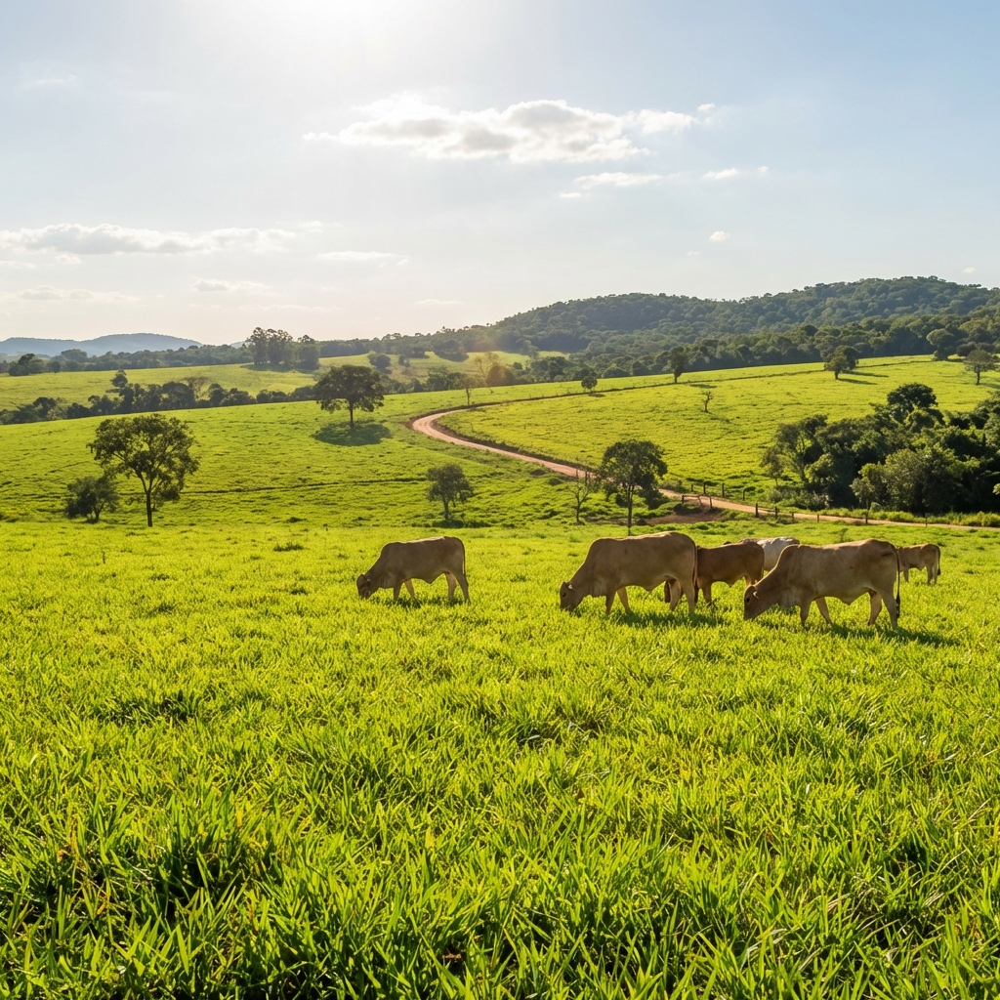
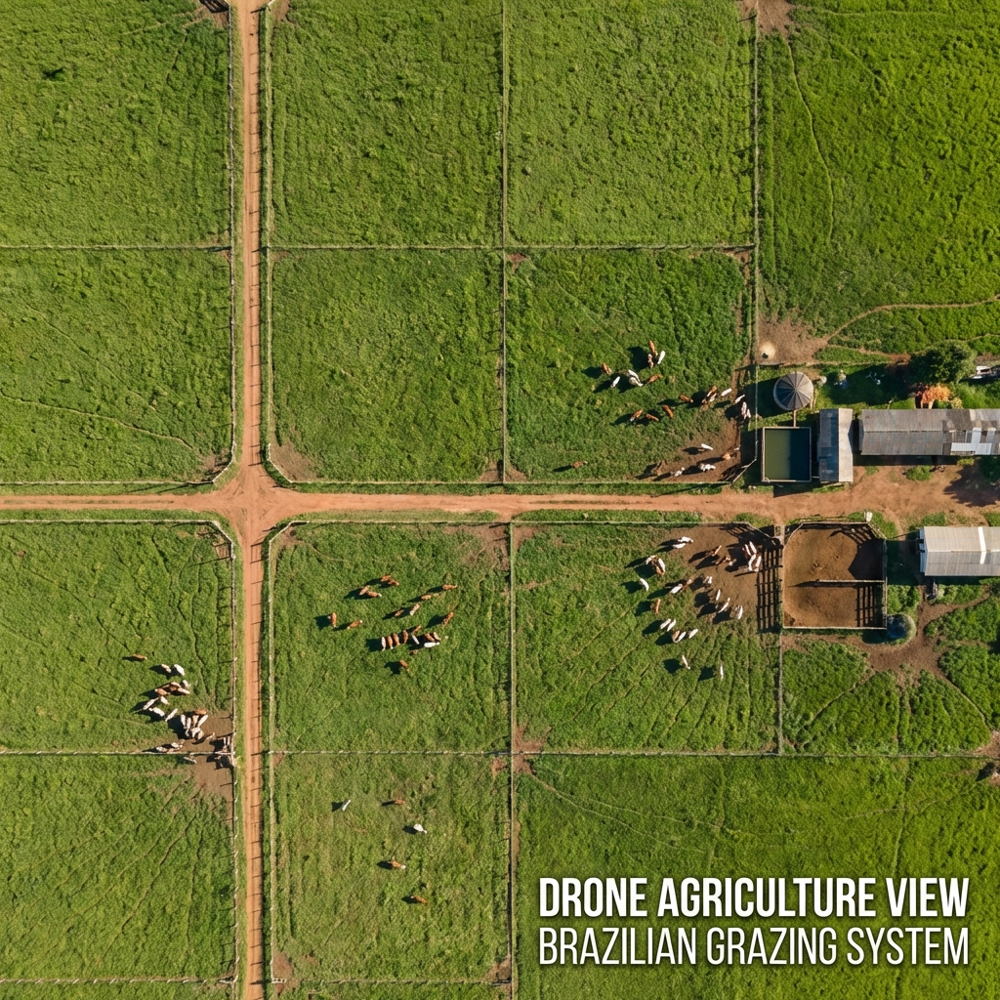
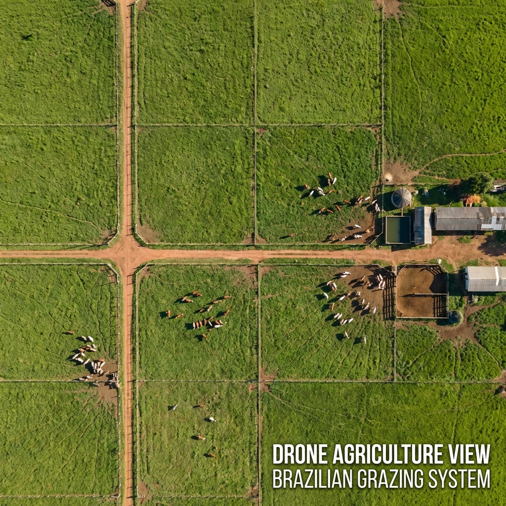
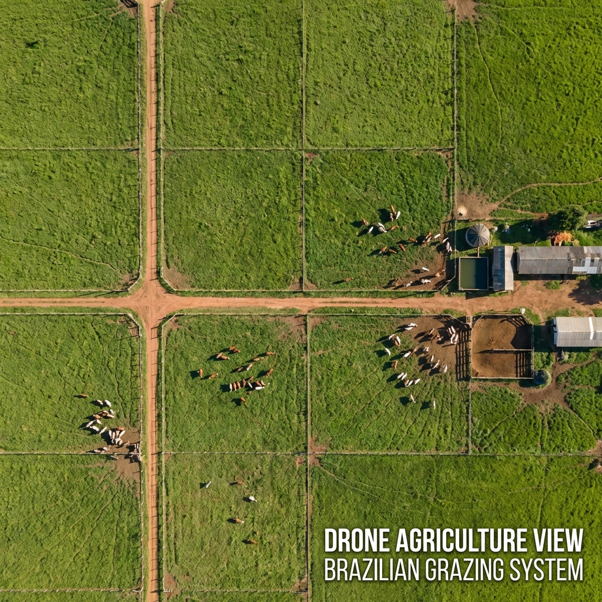
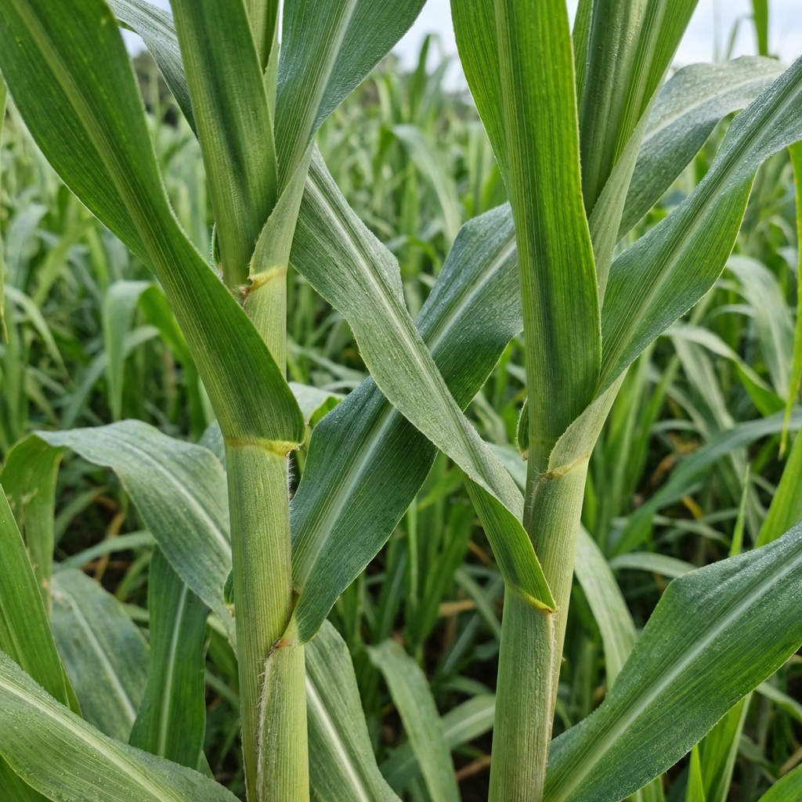
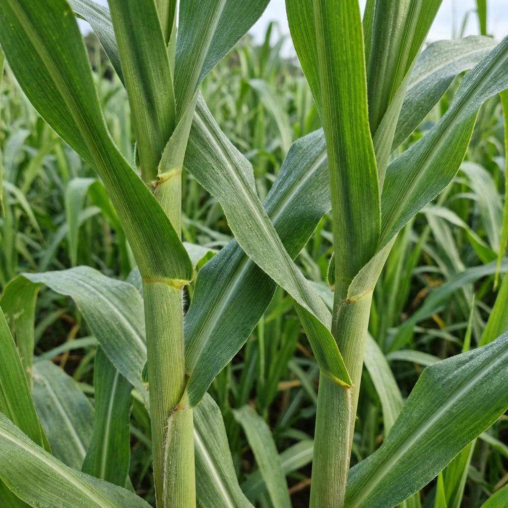
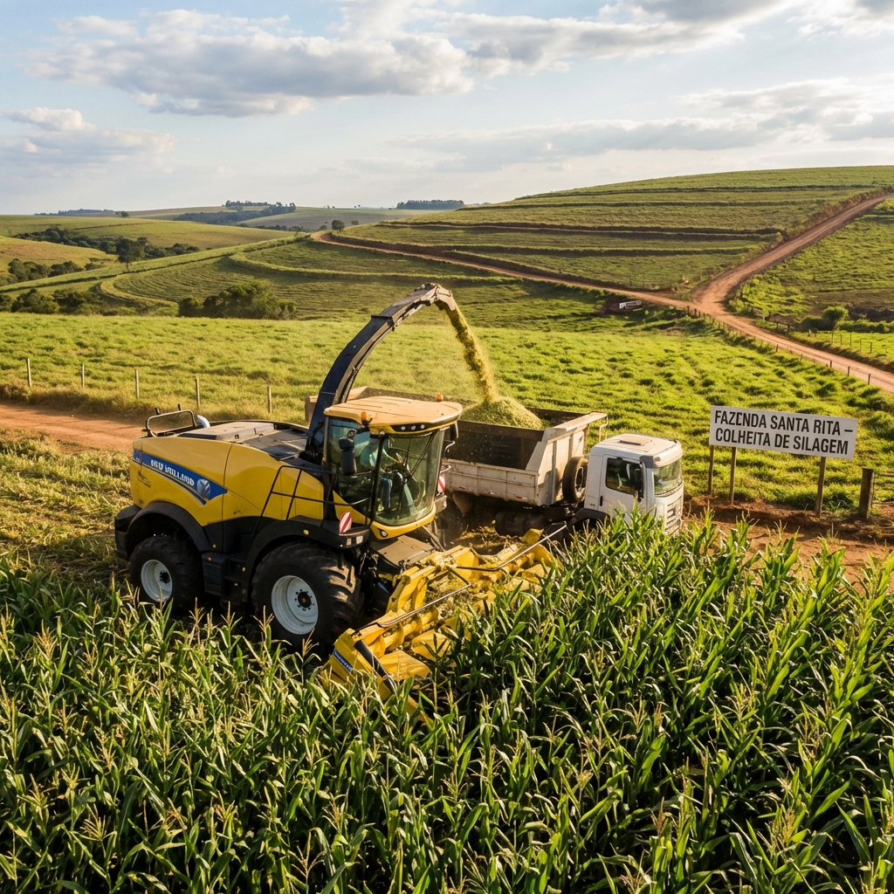
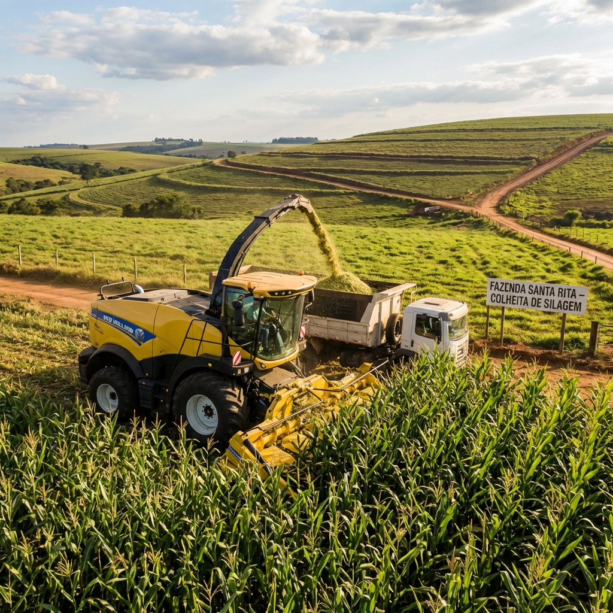

Especialidades
Culturas Atendidas
Conhecimento especializado para as principais culturas da pecuária brasileira

 


Capim Tifton
O queridinho da pecuária leiteira. Alta qualidade nutricional e excelente resposta à adubação.
pH Ideal
5.5 - 6.5
V% Ideal
50 - 70%
 


Capim BRS Açu
Alta produtividade de massa verde. Ideal para corte, feno e sistemas intensivos de produção.
pH Ideal
5.5 - 6.5
V% Ideal
50 - 70%

 

Milho
Grãos e silagem de alta qualidade. Suporte do plantio à colheita para máxima rentabilidade.
pH Ideal
5.5 - 6.5
V% Ideal
60 - 80%